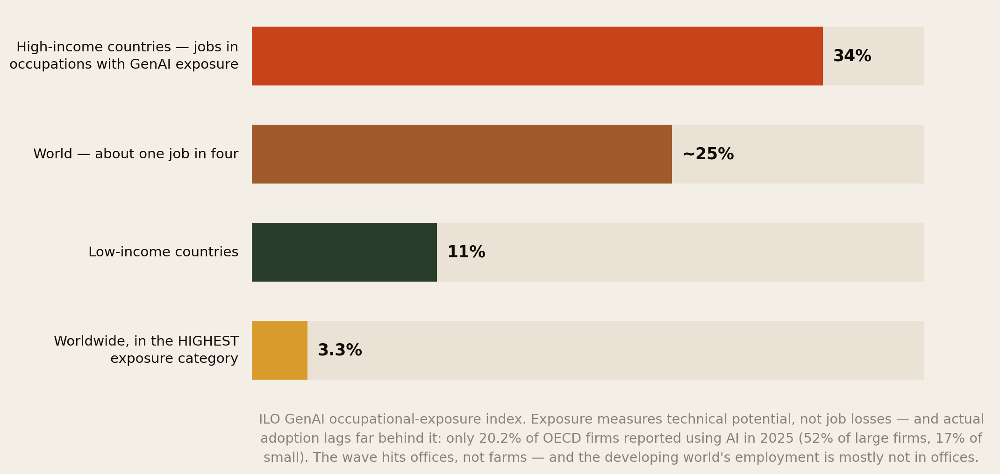
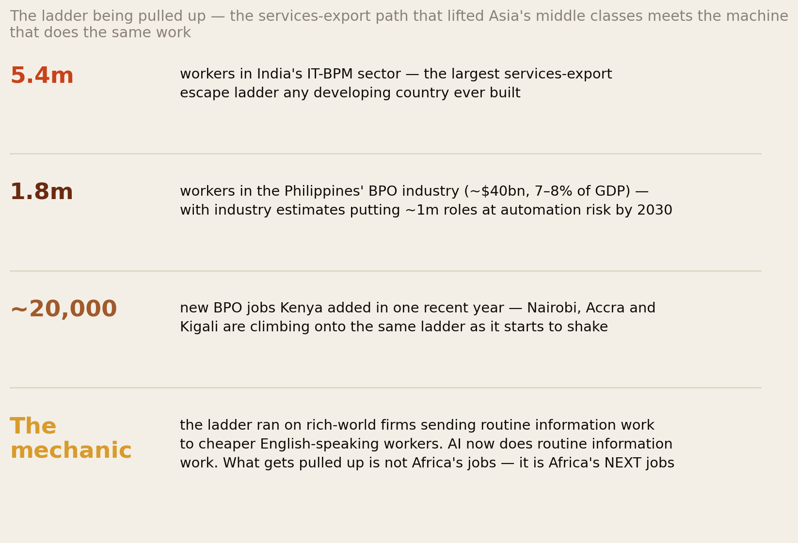
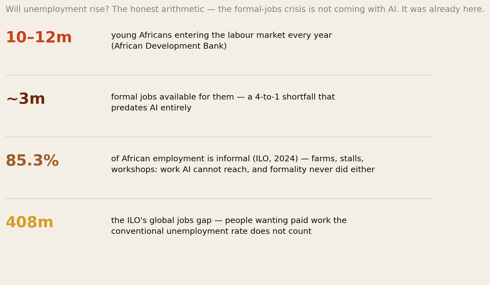
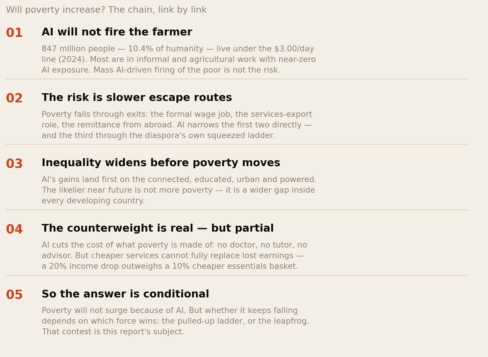
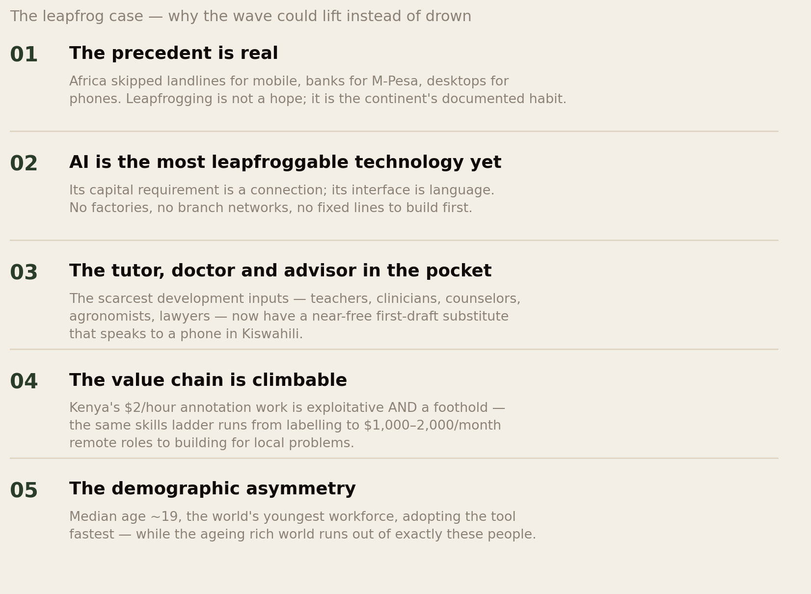
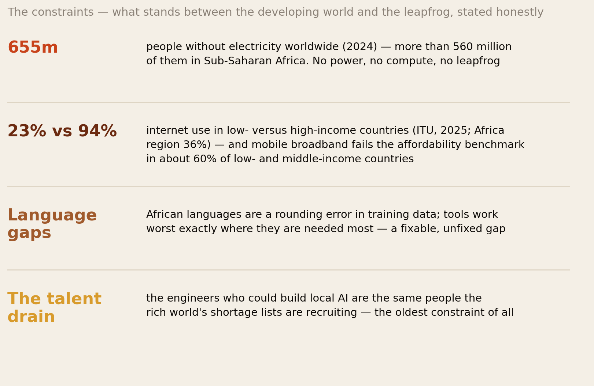
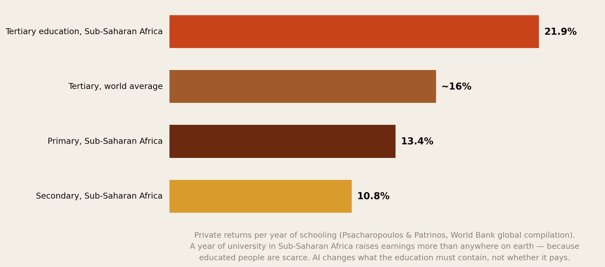
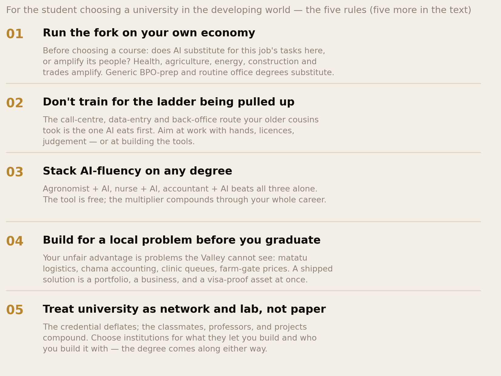

The Leapfrog Test.
Our two previous AI reports watched the wave from the departure lounge — what it does to the student flying out and the graduate abroad. This one turns around and looks at home. The paradox it finds: the developing world has the least AI exposure on paper — 11% of jobs in low-income countries versus 34% in rich ones — and the most at stake in practice, because the ladder it planned to climb (call centres, back offices, services exports) runs straight through the work AI does best. Will unemployment rise? Will poverty increase? Does education become worth more, or less? And how should a student in Nairobi, Lagos or Accra choose a university for a market nobody has seen yet? The evidence, question by question.
Section 01The Short Version
Every member of this network has a version of the same question waiting at home: a sibling choosing a degree, a cousin asking whether the BPO job is safe, parents asking whether school fees still make sense. Here are this report’s answers, evidence first:
- The exposure is asymmetric — and the asymmetry cuts both ways. The ILO finds jobs with generative-AI exposure concentrated in rich countries: 34% of employment in high-income countries versus 11% in low-income ones, with only 3.3% of jobs worldwide in the highest-exposure category. The developing world’s farms, stalls and workshops are largely out of AI’s reach. But so, therefore, are AI’s productivity gains — and the jobs that are exposed are precisely the modern, formal, exportable ones every development plan depends on.
- Will unemployment rise? Mostly the wrong question. With 85.3% of African employment informal (ILO), the unemployment rate will barely move — people too poor not to work do not show up as unemployed. The real number is the formal-jobs gap: 10–12 million young Africans enter the labour market yearly against ~3 million formal jobs. AI does not create mass unemployment here; it threatens to freeze that 4-to-1 shortfall in place by automating the routine office work poor countries hoped to sell.
- Will poverty increase? Not directly — but the escape routes narrow. 847 million people — 10.4% of humanity — live under the World Bank’s $3.00/day line (March 2026 update, for 2024), and Sub-Saharan Africa holds the majority. AI will not fire the farmer. The risk is slower exits: the services-export ladder that lifted Asia’s middle classes (India’s 5.4M IT-BPM workers, the Philippines’ 1.8M BPO workers with ~1M roles at automation risk by 2030) is being pulled up just as Africa reaches for it. Expect inequality to widen before poverty moves.
- Does education become worth more? Yes — with a twist. Returns to university in Sub-Saharan Africa are 21.9% per year of schooling — the highest on earth, against a ~16% world average. AI raises the value of what scarce educated people do while deflating the credential-alone: the degree that certifies routine information-handling loses value exactly as the degree that certifies judgement, hands-on skill and AI-fluency gains it. Education is worth more; generic education is worth less.
- The strategy exists, and it is not “avoid university”. For the student in a developing country the answer is a fork, not a verdict: choose fields where AI amplifies scarce professionals (health, agriculture, energy, engineering, teaching) or where local problems need builders — and treat AI-fluency as a free multiplier stacked on any degree. Ten rules in Section 10.
The mobile phone found Africa without landlines and made it the world’s leader in mobile money. AI now arrives at a continent without enough teachers, doctors or formal jobs. Whether it repeats the leapfrog or pulls up the ladder is the defining economic test of the next decade — and this report refuses to pretend the result is already known.
Section 02The Asymmetry

Start with the number that reframes everything else. When the ILO mapped every occupation on earth against what generative AI can actually do, the exposure landed where the offices are: about one job in four worldwide has some exposure, but 34% in high-income countries against just 11% in low-income ones — and only 3.3% of world employment sits in the highest-exposure category, overwhelmingly clerical work. Read naively, this says the developing world is safe: the farmer, the market trader, the mason and the matatu driver do work AI cannot touch, and they are the majority of workers from Dakar to Dhaka.
Read properly, it says something harsher. Exposure is where the productivity gains land too — the rich world’s offices are about to get cheaper to run, while the poor world’s fields are not. And the 11% that is exposed in poor countries is not a random 11%: it is the civil service, the banks, the telecoms, the BPO parks — the formal, modern, tax-paying, exportable sliver that every development strategy treats as the seed of the future economy. AI spares the developing world’s present and aims at its planned future. Meanwhile adoption tells its own story: only 20.2% of firms even in OECD countries used AI in 2025 (52% of large firms, 17% of small ones), so the wave is early everywhere — which is precisely why the next five years of choices, personal and national, still matter.
Two studies published in 2026 sharpen the asymmetry into something more useful than a warning. The World Bank’s World Development Report 2026 splits exposure into its two halves and finds the developing world’s hand better than it looks: only 4.5% of jobs in developing economies are amenable to generative-AI automation (versus 14.2% in high-income ones) — but 16.2% could see meaningful productivity gains, nearly matching the rich world’s 18.7%. Read together: the downside is three times smaller and the upside is almost the same size. These are modelled occupational potentials, not observed layoffs — but they are the best map yet of where the wave can hurt and where it can help. The joint ILO–World Bank study of 135 countries, pointedly titled Disruption without Dividend, then adds the timing problem: workers in vulnerable clerical roles are often already online, while the farmers and small firms who stand to gain mostly are not — so the automation risk can arrive before the productivity benefit does. That sequencing risk, not the exposure percentage, is the number-one thing developing-country policy has to beat.
Section 03The Ladder Being Pulled Up

To feel what is at stake, look at the one development strategy of the last thirty years that reliably worked without factories. India built a 5.4-million-worker IT-BPM industry on a simple arbitrage: rich-world firms sending routine information work — support tickets, claims processing, code maintenance, back-office everything — to cheaper, English-speaking, educated workers. The Philippines followed with a 1.8-million-worker, roughly $40-billion BPO industry that became the country’s economic crown jewel, employing more people than almost any private sector and funding whole provinces of remittance-like domestic transfers. This was the ladder: no ports, no heavy industry, no mineral luck required — just educated young people, connectivity and wage differences.
African capitals have spent a decade climbing onto the same ladder. Kenya branded itself “Silicon Savannah” and added on the order of 20,000 BPO jobs in a single recent year, with a presidential target of a million digital jobs; Ghana, Rwanda, Senegal and Egypt all run versions of the same play. The timing is the tragedy: generative AI’s single most proven skill is routine information work — exactly the bottom rungs of the outsourcing ladder. Industry and government estimates put around a million Philippine BPO roles at automation risk by 2030 (a figure the country’s own planning secretary calls possibly overstated — the debate itself is the point), and the entry-level voice-and-data-entry tier is thinning first. The cruelty is precise: what gets pulled up is not Africa’s existing jobs — it is Africa’s next jobs, the ones the current cohort of students was told to prepare for.
The first hiring-demand evidence from a developing region is now in, and it points the same way. A World Bank analysis of online vacancies across South Asia (August 2020 to February 2025, dominated by India’s urban white-collar market) found postings in the most AI-exposed and substitutable occupations running roughly 20% below other occupations after ChatGPT’s launch. Read it with discipline — this is advertised demand, not a 20% fall in employment, and it cannot separate AI from the hiring cycle — but it is the developing world’s first measured version of the entry-squeeze our New Ladder report documented in rich markets. The canary sings in Bangalore too.
One counter-current, and it is not small: the same QJE-published field experiment that made AI-assistance famous found customer-support agents 15% more productive with an AI assistant — with the largest gains going to the least experienced workers, in a Philippine-staffed operation. Read one way, that is the automation threat in slow motion. Read the other way, it says AI narrows the experience gap between a Manila or Nairobi agent and anyone else on earth — making the cheaper worker more competitive per dollar, not less, for as long as humans stay in the loop. Which reading wins is not physics; it is a race between task automation and task augmentation, and it will be decided market by market.
Section 04Will Unemployment Rise?

Now the first of Samuel’s — and every family WhatsApp group’s — direct questions: if AI spreads, does unemployment in the developing world go up? The statistically honest answer is: the unemployment rate will probably not move much — and that is not good news. Sub-Saharan Africa records some of the lowest youth unemployment rates in the world (around 8.4% by ILO measures) for a reason that flatters nobody: where there is no unemployment insurance, almost nobody can afford to be unemployed. People work — on farms, in markets, on motorbikes — because the alternative is hunger. 85.3% of African employment is informal, and informal work is nearly AI-proof: no one automates the mama mboga’s stall. The rate is a rich-country instrument pointed at a poor-country economy; the ILO’s broader 408-million global jobs gap — people who want paid work the headline rate never counts — is the truer gauge, and low-income countries carry it disproportionately.
The number that will actually move is the one that was already broken: the formal-jobs shortfall. 10–12 million young Africans enter the labour market every year; the continent generates roughly 3 million formal jobs for them. That 4-to-1 gap predates ChatGPT entirely. What AI threatens is the gap’s closing mechanism: the classic first formal jobs — clerk, teller, receptionist, data-entry operator, junior accountant, call-centre agent — are the highest-exposure occupations in the ILO’s index. Banks across the continent are already shrinking branch and back-office intake as mobile channels and now AI absorb the work. So the forecast is not “mass unemployment”; it is a longer queue for the same scarce formal doors, more educated young people absorbed downward into informality, and a widening gap between the credentialed and the connected few who cross. If you have read our New Ladder report, you will recognise the shape: the entry rung thins first, everywhere — the developing world simply had fewer rungs to begin with.
Kenya’s own 2026 Economic Survey makes the arithmetic concrete: of the 822,100 jobs the economy added in 2025, 87.2% were informal (KNBS, a series that excludes small-scale agriculture). That is the shape of the future the whole section describes — work is being created, in volume, but overwhelmingly outside the formal door AI now guards. And one measurement rule matters more than any statistic here: employment is not the same as an adequate income. A retrenched clerk who turns to irregular trading still counts as employed while earnings and security collapse — so the honest dashboard tracks earnings, hours and job quality, not the unemployment rate that can fall when discouraged people stop searching.
Section 05Will Poverty Increase?

The second direct question deserves the same discipline. The World Bank’s March 2026 update counts 847 million people — 10.4% of the world — in extreme poverty under its $3.00-a-day line (2021 PPP) in 2024, with a model-based nowcast of 10.0% for 2026 — a projection, not a completed survey — and Sub-Saharan Africa is home to the majority, with roughly 46% of its population below the line. Will AI push that number up? Follow the chain. The extreme poor are overwhelmingly rural, informal and agricultural — the least AI-exposed workers on earth. AI cannot fire people it never employed. There is no direct mechanism by which AI throws the world’s poorest out of work.
The indirect mechanism is the one to watch. Poverty falls when people exit it, and the exits are exactly what Sections 03 and 04 mapped: the formal wage job, the services-export role, and — for millions of families — the remittance from a relative abroad, which our remittance research priced at an 8.78% corridor cost. AI narrows the first two directly, and squeezes the third through the diaspora’s own thinning entry rung — the shrinking doorway we documented from the other side. Slower exits do not mean rising poverty; they mean poverty falling more slowly than it should, while AI’s gains pile up on the connected, educated, urban and powered. The likelier near-term future is not more poor people — it is a wider gap inside every developing country, which history says is its own kind of dangerous.
And yet the counterweight is real, and a report that hid it would be dishonest in the other direction. Poverty is not only an income; it is a bundle of absences — no doctor within reach, no tutor for the child, no lawyer, no agronomist, no market-price information. AI collapses the price of exactly these absences, delivered through the phone that mobile money already put in the poorest hands. A near-free tutor, triage nurse and crop advisor in Kiswahili does not raise a family’s income line — but it attacks what the income was needed for. So the honest answer to “will poverty increase?” is: no by default — but whether it keeps falling depends on which force wins, the pulled-up ladder or the leapfrog.
Two disciplines keep that answer honest. First, the counterweight has limits, and a simple household ledger shows why: a family earning KES 30,000 against a KES 28,000 essentials basket that loses 20% of its income sits KES 4,000 short each month — and even if AI makes the basket 10% cheaper, it is still KES 1,200 short. Cheaper services soften an income shock; they do not replace an income. Second, beware any headline that multiplies an AI-exposure percentage by a population to produce a poverty forecast: a credible estimate needs household incomes, affected occupations, replacement work, prices and transfers — no defensible single number for AI-driven poverty exists, and this report refuses to invent one. Which brings us to the leapfrog.
Section 06The Leapfrog Case

Here is the optimists’ case, and it rests on a precedent this continent owns. Africa skipped the landline and went straight to mobile; skipped the bank branch and built M-Pesa, which moves value equal to roughly half of Kenya’s GDP through phones that cost less than a bicycle. Leapfrogging is not a development-conference hope here; it is the documented national habit. And AI is, on its face, the most leapfroggable technology ever shipped: it needs no factory, no branch network, no cold chain — its capital requirement is a connection and its interface is human language. The same continent that could never afford to train enough teachers, doctors and agronomists per capita can now put a competent first draft of each in every pocket, at a marginal cost near zero.
The value chain, crucially, is climbable — and this network watches people climb it in real time. The bottom rung is ugly: Kenyan annotators labelling training data for around $2 an hour, doing the piecework of other people’s AI economies — exploitative and a foothold, both true at once. The rungs above are real: structured remote roles paying $1,000–2,000 a month for AI-literate work; developers fine-tuning models for African languages; founders building for problems the Valley cannot see — matatu logistics, chama accounting, clinic queues, farm-gate pricing. Add the demographic asymmetry — a median age near 19, the youngest workforce on earth, adopting these tools fastest, while the ageing rich world runs short of exactly such people — and the leapfrog case stops sounding like a TED talk and starts sounding like arithmetic.
And now the study every optimist in this section has to sit with. A randomized experiment gave 640 Kenyan entrepreneurs GPT-4 business advice (run in 2023, published in Management Science in July 2026) and found no detectable average improvement in revenue or profit — and the initially weakest businesses did nearly 10% worse, apparently following fluent advice they lacked the cash, customers or slack to implement, while stronger businesses showed suggestive gains. The lesson is not “AI fails in Africa”; the sample was connected and relatively educated, and the tools have improved since. The lesson is sharper: advice is not capital. A confident recommendation cannot conjure working capital or customers, and the entrepreneurs best placed to profit from AI are the ones already ahead — the same concentration mechanism the IMF’s 2026 “intelligence divide” paper warns about at country level: what matters is not access to the tool but the capability to turn it into productivity. The leapfrog is real; it just is not automatic, and it lands unevenly.
The pessimists’ case is Section 03: the ladder pulled up. The optimists’ case is this section: the leapfrog. Both are real, both are running, and no serious economist knows which wins. That is why this report is called a test.
Section 07The Constraints

Now the cold water, itemised. The June 2026 SDG7 tracking update counts 655 million people without electricity in 2024 — more than 560 million of them in Sub-Saharan Africa — and no amount of model capability reaches a phone that cannot charge. Connectivity stacks on top: internet use runs 23% in low-income countries against 94% in high-income ones (36% for the ITU Africa region), and mobile broadband fails the ITU affordability benchmark in about 60% of low- and middle-income countries — the doorway to the leapfrog has a toll on it. The continent hosts a sliver of global data-centre capacity, which means the leapfrog runs on rented rails: models trained elsewhere, priced elsewhere, governed elsewhere, payable in dollars a depreciating shilling must buy. African languages remain a rounding error in training data, so the tools perform worst precisely for the users who need them most — a fixable gap that mostly is not being fixed, though Kenyan, Nigerian and South African teams are trying. And the oldest constraint compounds them all: the engineers who could build local AI are the same individuals on every rich-world shortage list, recruited outward through the very corridors this Forum’s members travelled — the same shortage-list pull our open-door research mapped from the other side.
State the conclusion without flinching: the leapfrog is possible, not promised. M-Pesa worked because the missing infrastructure it replaced (banking) needed less physical capital than the infrastructure AI needs (power, compute, connectivity). The countries that clear the constraints — and Mission 300, the World Bank/AfDB push to connect 300 million Africans to electricity by 2030, is the scale of effort required — get the leapfrog. The countries that do not will consume AI as an import, and the value will flow the way it always has.
Section 08Is Education Worth More Now?

The third direct question — does all this mean education becomes worth more than now? — has the most counter-intuitive answer, so take it in two steps. Step one, the baseline almost nobody in the anxiety-discourse knows: returns to education in Sub-Saharan Africa are the highest in the world — 21.9% per year of tertiary schooling, against a world average near 16%, with primary at 13.4% and secondary at 10.8%. Each year of university in Africa raises earnings by more than a fifth, year on year, for a working life — a return no asset class matches. The reason is brutal supply and demand: educated people are scarce (tertiary enrolment in SSA runs near 9–10%, against a world average around 40%), so the premium on the few is enormous. This is the opposite of the rich-world problem, where degrees are abundant and the graduate premium is eroding.
Step two, what AI does to that premium — and here the level split from our New Ladder research replays at continental scale. AI deflates the credential that certifies routine information-handling: the degree whose graduate was headed for data entry, basic bookkeeping, form processing or scripted support is losing its market exactly as Section 03 described. But AI amplifies the professional whose scarce judgement it extends: the doctor who supervises AI triage across three counties, the agronomist whose advice reaches a million farmers through a chatbot she trains, the engineer who deploys what others merely use, the teacher orchestrating AI tutors. In an economy where the educated are scarce, augmentation is worth more, not less — there is no one else to do what the amplified professional does. So the paradox resolves cleanly: education in the developing world becomes worth more in the AI era — and the degree-as-paper becomes worth less — at the same time. The 21.9% return was always an average across both kinds of graduate. AI is prising the average apart.
Three 2025–26 findings put flesh on both halves of that sentence. On the premium’s persistence: the OECD’s latest comparison shows tertiary-educated workers in Brazil and South Africa out-earning secondary-educated ones by more than 140% — among the widest graduate premiums measured anywhere — and across 22 low- and lower-middle-income countries the ILO finds unemployment among tertiary-educated 15–29-year-olds falling 1.1 percentage points over 2023–25, four times the improvement for secondary graduates. The degree, at home, is still working. On what AI does to the learning itself, the experimental evidence splits exactly like the labour market: a Nigerian randomized evaluation of supervised after-school AI tutoring (with teachers, structured) delivered about +0.3 standard deviations of learning in six weeks — among the strongest cheap education interventions on record — while a Turkish high-school experiment found students who practised with an unguarded chatbot scored 17% worse on the unaided exam than students with no AI at all; a hint-giving tutor design removed the harm. Same tool, opposite outcomes, one variable: whether the human is still doing the thinking. That single distinction — AI as tutor versus AI as substitute for practice — decides whether the technology raises or quietly hollows the 21.9%.
The question “is university still worth it?” has different answers in London and Lagos. Where degrees are abundant, AI erodes the premium. Where degrees are scarce, AI multiplies what the degree-holder can do. Scarcity was always Africa’s educational curse. In the AI era it quietly becomes the hedge.
Section 09The University Decision
So to the student — and to the parent paying, the sibling abroad wiring fees, the whole committee that an African university decision actually is. The old playbook said: get any degree, because the paper itself opened formal doors. That playbook is dying. The new one has three moving parts.
First, run the substitute-or-amplify fork on the local economy, not the global one. Our AI-and-migration report introduced the fork for students heading abroad; at home it points differently. Ask of any intended career: does AI do this job’s core tasks, or does it extend the reach of the scarce person doing them? In developing economies the amplify list is long and physical: medicine and nursing (the doctor–patient ratios make every clinician un-automatable for decades), agriculture and agronomy (the continent’s largest employer, barely digitised), energy and electrical engineering (Section 07 is the job listing), construction and the licensed trades, teaching, logistics, water. The substitute list is the tragic one: generic business-administration, clerical and secretarial tracks, routine accounting, the “computer packages” certificates — training aimed at exactly the office work AI eats first. The fork is not STEM-versus-arts; a literature graduate who can really write and really use the tools out-competes a rote-trained accountant. It is routine-versus-judgement, and every family should run it before choosing a course.
Second, price the local university honestly against the foreign one. The home-first sequence we mapped for careers now applies to degrees: with the rich world’s graduate rung thinning and its student doorways narrowing by policy, the “study abroad at any cost” premium is shrinking — while the local degree plus demonstrable AI-era skills plus a shipped project increasingly beats the foreign degree alone. The foreign university still wins for frontier specialisations, research careers and fields where local programmes are weak. But it is now a considered purchase, not a default — and a student who builds locally first and goes abroad at master’s level, funded and specialised, extracts more from both systems at a fraction of the family’s risk.
Third, treat AI-fluency as the free second major. The tools are largely free; the multiplier is not optional. Nurse-plus-AI, agronomist-plus-AI, accountant-plus-AI each out-earn and out-survive all three alone — and in a low-adoption economy (remember: 20.2% even among OECD firms), the first fluent person in any organisation becomes its de facto transformation officer, whatever their job title says. That is a promotion path no curriculum lists.
And because “choose well” is useless without a method, here is the vetting toolkit — drawn from the strongest practical guidance in this report’s evidence base. Before paying anything: compare three realistic programmes (including one vocational or lower-cost route), read about 30 recent local job vacancies for the occupations each leads to, and talk to recent graduates and a few employers. Demand outcomes by course and year — completion, time to first relevant paid job, typical earnings — and ask for the denominator and response rate, because a brochure’s three smiling alumni can hide a cohort that never found the profession. Stress-test the financing against a slow start: run the numbers on twelve months without a graduate job, using local starting-pay evidence rather than the salary on the poster. And treat institutional AI-marketing as noise: a UNESCO survey of 200 universities across 19 Latin American and Caribbean countries found 87% using AI somewhere but only 26% with any formal AI strategy — adoption is a weak quality signal everywhere. Ask instead how the institution teaches AI use, examines unaided competence, and trains its own lecturers. An “AI university” billboard answers none of those questions.
Section 10Ten Rules for the Class of 2030

- 1. Run the fork on your own economy. Substitute or amplify — asked of the career here, not in California. Health, agriculture, energy, trades and teaching amplify. Generic office-prep substitutes.
- 2. Don’t train for the ladder being pulled up. The call-centre, data-entry, back-office route your older cousins took is the rung AI eats first. If BPO is the entry point available, take it — but climb immediately: quality assurance, team lead, prompt-and-workflow design, the parts that supervise the machine.
- 3. Stack AI-fluency on any degree — but keep unaided practice. The tools are free and the multiplier compounds for forty years. The Turkish experiment’s warning stands: students who let the chatbot do the thinking scored 17% worse without it. Attempt first, ask for hints, verify, then solve the next one alone.
- 4. Build for a local problem before you graduate. Your unfair advantage is problems the Valley cannot see. A shipped solution — however small — is a portfolio, a possible business and a visa-independent asset at once.
- 5. Treat university as network and lab, not paper. The credential deflates; the classmates, professors and projects compound. Choose the institution by what it lets you build and who you build it with.
- 6. Aim at the professions scarcity protects. A country with one doctor per several thousand people cannot automate doctors; it can only amplify them. Licensed, physical, scarce — three properties AI respects.
- 7. Learn to sell what you know across borders without moving. Remote work, freelance platforms and the $1,000–2,000/month structured roles are the new middle rung between the $2 annotation floor and emigration. English plus AI-fluency plus reliability is an export product.
- 8. If you go abroad, go up — not out. Leave for a specific specialisation, funded, at postgraduate level, with a return thesis — not for a generic degree at the moment the doorway narrows. The strongest position in 2030 is the person fluent in both worlds, not stranded between them.
- 9. Watch electricity, not headlines. Whether your country clears Section 07’s constraints — power, connectivity, compute access — tells you more about your decade than any AI announcement. Plan for the country you are actually in.
- 10. Keep the family ledger honest. University still pays 21.9% a year here — the best return the family can buy — if rules 1–6 choose what it buys. The fees WhatsApp group deserves the fork, not the fear.
Section 11What Governments and Universities Must Do
Students choose inside systems, and the systems have their own exam to sit. Briefly — because this library’s readers are mostly families, not ministries — the checklist that decides which countries pass the leapfrog test:
- Power first, rhetoric later. Mission 300’s target — 300 million more Africans connected by 2030 — is the single highest-leverage AI policy on the continent. No electricity, no leapfrog; everything else is conference talk.
- Buy compute access, not compute vanity. Few developing countries need sovereign frontier models; all need negotiated cloud capacity, data-centre investment and pricing their startups can survive — plus the data-protection law that makes them a trustworthy processing destination.
- Fix the curriculum lag measured in decades. Universities still minting typists’ successors — the routine-clerical curricula — are manufacturing the substitute list. The fastest reform is not new AI faculties; it is threading the tools through medicine, agriculture, education and engineering programmes that already exist.
- Fund the language gap. Kiswahili, Hausa, Yoruba, Amharic, Wolof: the training-data gap is small money by global standards and transformative locally — and it is the one constraint African institutions can fix without anyone’s permission.
- Regulate the annotation floor. The $2/hour tier is the continent’s AI sweatshop and its on-ramp simultaneously; labour standards that lift the floor without burning the ramp are delicate, necessary and overdue.
- Count honestly. The unemployment rate hides the story (Section 04). Governments that track the formal-jobs gap, underemployment and the informal majority will at least know whether they are passing.
Section 12The Home-Ground Advantage
End the analysis where this Forum always ends: with the asymmetries that favour our readers. The diaspora member reading this holds a position neither the cousin at home nor the local employer abroad quite sees. You have watched AI arrive in rich-world workplaces two or three years before it saturates home markets — you are, functionally, a time traveller with respect to your home economy’s adoption curve. You hold rich-world savings against home-market costs. You know both the problems the Valley cannot see and the tools it built. Every previous technology wave — mobile, fintech, e-commerce — minted a cohort of diaspora returnees and remote co-founders who arbitraged exactly this gap; M-Pesa itself was seeded by money and ideas moving along diaspora corridors.
The practical forms are concrete. The professional abroad who spends a weekend a month making a sibling’s business AI-literate. The remittance that buys a laptop and a course instead of only consumption — the one-person chama, pointed at capability. The mid-career specialist who takes the mid-level premium home, where scarcity makes it worth double. The Forum member who mentors three students at home through Rules 1–10 — free to give, compounding for decades. The leapfrog, if it happens, will not be executed by governments alone. It will be executed by networks — and this is one.
Section 13The Uncomfortable Part
The honesty section, as always. First: much of this report is forecast, and forecasts about AI have aged badly in both directions. The 2013-era predictions that automation would erase half of all jobs were wrong; so were the 2023 assurances that nothing would change. We have flagged our two previous AI reports for revisit by mid-2027 and this one joins them — if the evidence moves, the report moves.
Second: the leapfrog framing flatters us, and we chose it anyway. There is a harsher reading in the literature — that AI ends the labour-arbitrage development model outright, forecloses the manufacturing and the services escape routes, and leaves commodity exports plus tourism; that M-Pesa is a story about payments, not a general law of catching up. We find the constraint-conditional version better supported, but the reader should know the pessimists are serious people, not straw men.
Third: the 21.9% education return is an average over people who got formal jobs in the old economy. If AI thins the formal sector the return estimated on yesterday’s graduates may overstate tomorrow’s — that is precisely why Sections 09 and 10 insist the return now depends on what the degree contains, not the paper. We report the strongest number honestly and refuse to let it do more work than it can.
Fourth, the part closest to home: this network exists because people left, and Rule 8 quietly argues that fewer should — or should leave differently. There is a tension in a diaspora forum publishing home-first advice, and we would rather name it than perform neutrality. Our resolution is the one the evidence forced on the careers report too: the question was never whether to go, but when, at what rung, and with what plan — and the AI era has moved the optimal answers for many people. Not all. Many.
Section 14Method & Limits
How this report was built, and where it can break:
- Exposure and adoption data come from the ILO’s refined global index of occupational GenAI exposure (the 34%/11% high-versus-low-income split, ~25% world, 3.3% highest-exposure, clerical concentration) and OECD firm-adoption surveys (20.2% overall in 2025; 52% large firms, 17.4% small). Exposure measures technical potential, not realised job loss — a distinction the whole report leans on.
- Poverty figures use the World Bank’s updated $3.00/day (2021 PPP) international line: 847 million people (10.4%) in extreme poverty in 2024 per the March 2026 update, with a model-based 10.0% nowcast for 2026, Sub-Saharan Africa near 46% of its own population and a majority of the global total. Line revisions changed levels, not trends; we quote the current line only — and poverty estimates are lagged model updates, not live counts.
- Labour-market structure: ILO (85.3% informal employment in Africa, 2024; the 408M global jobs gap; SSA youth unemployment ~8.4% with the insecurity caveat stated in Section 04) and the African Development Bank’s 10–12M annual labour-market entrants versus ~3M formal jobs.
- The services-export ladder: NASSCOM (India IT-BPM ~5.4M), IBPAP and Philippine government statements (1.8M workers, ~$40B, ~1M roles at automation risk by 2030 — with the planning secretary’s 2026 “may be overstated” caveat quoted rather than hidden), Kenyan BPO growth reporting, and the QJE customer-support field experiment (+15% productivity, largest gains to least-experienced agents).
- Education returns: Psacharopoulos & Patrinos’s World Bank global compilation (SSA tertiary 21.9%, primary 13.4%, secondary 10.8%; world tertiary ~16%). These are private returns estimated on past graduates; Section 13 states the forward-looking caveat.
- 2026 modelled and experimental evidence, added from a member-shared dossier whose primary citations we verified and cite: the World Development Report 2026 automation/productivity split (4.5%/16.2% developing vs 14.2%/18.7% high-income — modelled potentials, not observed losses); the ILO–World Bank Disruption without Dividend working paper (135 countries; connectivity sequencing); the World Bank South Asia Development Update (Lightcast vacancies, Aug 2020–Feb 2025, India-dominated — advertised demand, not employment); KNBS Economic Survey 2026 (Kenya: 822,100 jobs added in 2025, 87.2% informal, series excludes small-scale agriculture); Otis et al., Management Science 2026 (640-entrepreneur Kenyan GPT-4 RCT — null average, ~−10% for weakest firms; 2023 fieldwork, connected sample); the IMF “intelligence divide” working paper (2026/190); OECD Education at a Glance 2025 (Brazil/South Africa >140% tertiary premium — descriptive, not causal); ILO Global Employment Trends for Youth 2026 (22-country tertiary-unemployment comparison); the Nigerian AI-tutoring RCT (~+0.3 SD, supervised, June–July 2024) and Bastani et al., PNAS 2025 (Turkish guardrails experiment, −17% unaided); UNESCO IESALC (87%/26% institutional survey), UNESCO ministerial priorities and TVET guidance (2026); ITU Facts and Figures 2025.
- Infrastructure and access: the SDG7 tracking update (June 2026) — 655M people without electricity in 2024, over 560M in Sub-Saharan Africa; Mission 300 as the response; ITU Facts and Figures 2025 (23%/94% internet use, Africa region 36%, ~60% of low- and middle-income countries failing the mobile-broadband affordability benchmark).
- What we could not verify or chose to soften: country-by-country BPO automation counts (only the Philippines publishes a debated national estimate); African data-centre capacity shares (order-of-magnitude only, so we wrote “a sliver”); the $2/hour annotation and $1,000–2,000 remote-role figures are journalistic and platform-reported ranges, not statistics. All forward-looking sections (05, 06, 09–12) are analysis, not measurement, and are flagged as such in the text.
- AI use in production: this report was drafted, charted and fact-checked with AI assistance under editorial control — the same tools it analyses. Every load-bearing number was verified against the primary source before publication; the interpretation, emphasis and errors are ours.
Principal sources: ILO Generative AI and Jobs (refined global exposure index) and ILO informality, jobs-gap and youth statistics; World Bank Poverty and Inequality Platform (March 2026 update, $3.00/day 2021 PPP) and World Development Report 2026; ILO–World Bank Disruption without Dividend; World Bank South Asia Development Update; African Development Bank jobs-for-youth data; KNBS Economic Survey 2026; Psacharopoulos & Patrinos, Returns to Investment in Education (World Bank) and OECD Education at a Glance 2025; Otis et al. (Management Science) and Brynjolfsson, Li & Raymond (QJE) field experiments; the Nigerian AI-tutoring evaluation and Bastani et al. (PNAS); IMF Working Paper 2026/190; NASSCOM and IBPAP industry data with Philippine NEDA commentary; SDG7 tracking 2026 and ITU Facts and Figures 2025; UNESCO IESALC, ministerial and TVET publications.
Companion reports: this is the third panel of the AI triptych — The Algorithm at the Border (AI × moving abroad) and The New Ladder (jobs before and after AI, and the level split) look at the same wave from the migrant’s side. The escape-route economics connect to The Uncounted Year (remittances) and The Black Tax Ledger; the confidence to act on Rule 4 is The Most Optimistic People on Earth’s subject.
The full report is also available as a PDF edition for printing, sharing, and the family WhatsApp group where the university decision will actually be made.
Africa Global Forum · Research · 2026